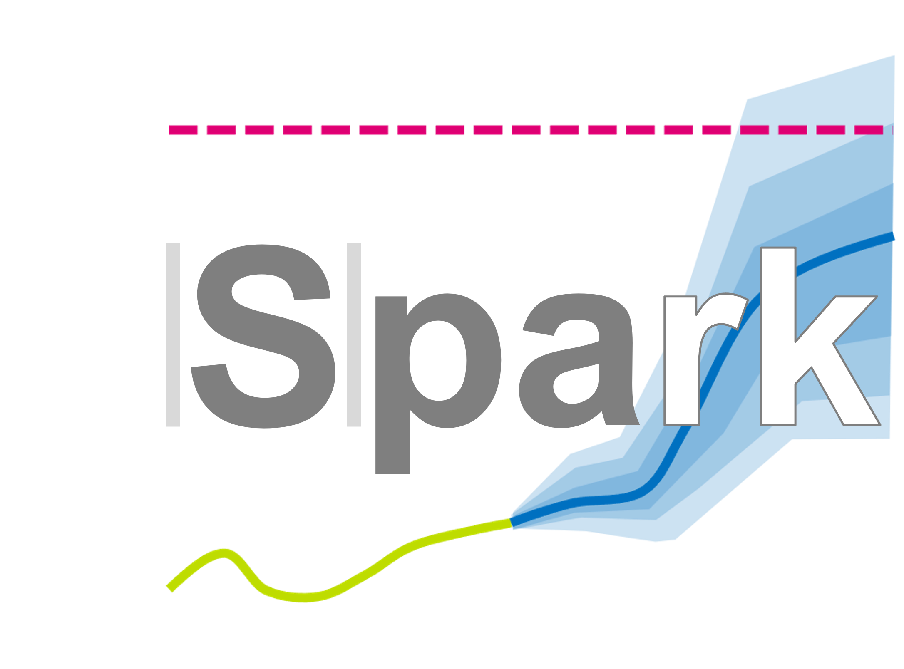

General
Business Understanding
Data Understanding
Data Preparation
Modeling
Evaluation
API Reference
Spark documentation
¶

Note
This project is an Enexis case on forecasting load demand for distributon transformers.
The results should support grid planners with timely grid reinforcements and replacements.
The case is used as a graduation project for the Professional Education program of the Jheronimus Academy of Data Science
Contents:
General
About JADS
About Enexis
About the current situation
About this projects aim
About the structure of this project
Acknowledgements
Business Understanding
Business Objectives
Situation Assessment
Data Mining Goals
Project Plan
Data Understanding
Initial Data Collection
Data Description
Data Exploration
Data Quality
Data Preparation
Data Selection
Data Cleaning
Data Construction
Data Integration
Data Formatting
Modeling
Modeling Technique
Test Design
Model
Model Assessment
Evaluation
Modeling Technique
Test Design
Model
Model Assessment
API Reference
src
General